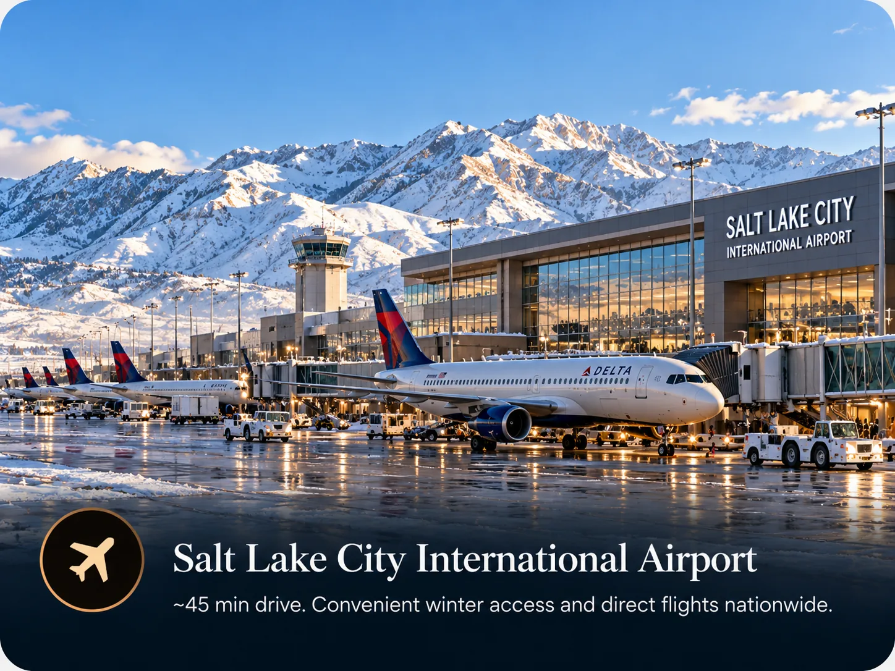

Presidents' Week is the hardest week of the year to book a ski trip in Park City, and the units that sleep a whole family go first. Here is what the week looks like in Canyons Village, what ski-in ski-out means once you are standing there, and how far ahead the good lodging disappears.

The exact dates of Presidents' Week 2027
Presidents' Day is always the third Monday in February. In 2027 that is Monday 15 February.
Park City lodging almost universally runs Saturday to Saturday, so the ski week built around the holiday is Saturday 13 February to Saturday 20 February 2027, seven nights. That exact block sells out, and it sells out well before the shoulder weeks either side of it.
The week matters because school holidays stack on top of each other. Much of the north east and a good part of the midwest take the same February break, so families who cannot travel at any other time all aim at the same seven nights. There is more on that in why Presidents' Week sells out first.
Presidents' Day 2027 is Monday 15 February. The ski week is 13 to 20 February. If you need a unit that sleeps six or more with ski access, you are competing with every other family on the same calendar.
Where Canyons Village actually is
This trips up more first-time visitors than anything else, and it is the most useful thing to get straight before you book.
Park City Mountain Resort has two base areas. One is the Park City base, at the bottom of the historic Main Street, in town. The other is Canyons Village, a purpose-built ski village about ten minutes away by road. The two are joined on the mountain and one lift ticket covers both, so from a skiing point of view they are the same resort.
From a staying point of view they are not the same at all. Listings that say nothing more precise than "Park City" could be at either, or in a development fifteen minutes from both. Before you book anything, find the actual street address. The full comparison is in Canyons Village or the Park City base.
What ski-in ski-out means here
Ski-in ski-out is not a regulated term, and in Park City it covers everything from a door that opens onto a run to a building where you carry skis for ten minutes across a car park.
In Canyons Village the main uphill lift is the Red Pine Gondola, and the village is built around it. The Orange Bubble Express, the heated chairlift most people remember from the trip, and the Sunrise Gondola are also in the village. The Canyons base ticket office sits at the bottom of the Red Pine Gondola, so collecting passes on the first morning is a walk rather than a drive.

What varies is which building you are in. The village is big enough that a unit at one edge is a genuinely different walk from one beside the gondola, especially with a six year old and a day's kit. Two questions settle it.
- Which building, and which lift do I walk to? Ask for the name of the lift, not a reassurance. An owner who skis from the place answers in seconds.
- Where do the skis live overnight? Storage at the base is the difference between carrying boots through a lobby every morning and not.
Why this one week behaves differently
Rates move with demand all season, but Presidents' Week is its own category. School calendars line up, so the people who want the week cannot shift it. Lift capacity does not change, so the mountain runs at its busiest. And the supply of lodging that sleeps a whole family in one unit is genuinely small, because most inventory is studios and one-bedrooms built for couples.
The practical result is that nightly rates for a comparable two-bedroom villa reach $800 to $1,200 and beyond on the large booking sites during this window, and the units that go at the bottom of that range are gone by early winter.
Skiing the week itself
The mountain is busy, and pretending otherwise helps nobody. Two habits make a real difference. Ski the first hour, because the gondola queue at nine is nothing like the queue at eleven. And eat lunch early or late, because the on-mountain restaurants fill on a tighter schedule than the lifts do.
Staying in the village helps in a way that is easy to underrate. When you can walk back to the unit, a mid-afternoon break costs nothing, and the family that takes one is still skiing on Thursday. More in February conditions and crowds.
What a week costs, and what gets added at the end
Budget the nightly rate, then budget the things that are not in it. The order-of-magnitude items for a family of six to eight:
- Lodging. The headline number, and the one that moves most with how early you book.
- Lift tickets. The largest line after lodging. Multi-day tickets bought in advance cost meaningfully less than tickets at the window, and a pass can be worth the maths even for one trip with a large family.
- Resort and village fees. Many properties add a nightly resort fee and a village assessment on top of the rate. Normal, but not always shown until checkout.
- Equipment. Rentals in the village are convenient and priced accordingly. Booking ahead is cheaper.
- Food. Where a full kitchen changes the arithmetic. Breakfast and a few dinners in, for eight people across seven days, is a difference measured in hundreds.
Whoever you book with, ask for the all-in total for your exact dates, with cleaning, resort fees, village assessments and tax included. A rate that looks lower per night sometimes is not, and the only honest comparison is the final figure.
Getting there from Salt Lake City
Canyons Village is roughly 33 miles from Salt Lake City International Airport, about 40 to 45 minutes in normal conditions. The route is I-80 east through Parley's Canyon, then Highway 224 towards Park City.

Two things change that number. Snow in Parley's Canyon adds 15 to 30 minutes and occasionally much more, and weekday evening traffic out of Salt Lake adds its own. For the flight home during a holiday week, leave earlier than feels necessary.
A rental car gives the most freedom and costs you a parking space. Shared shuttles are the cheapest door-to-door option and stop for other passengers. Private transfers cost more and make sense for a group of eight, because the per-person figure stops looking bad once you divide it. If you are staying in the village and skiing the mountain, you may not need the car at all.
When to book, and what goes first
For a mid-February stay, the ski-in units that sleep a whole family tend to go between October and early January. Larger units go earliest, because there are fewer of them and because a family of eight cannot substitute two studios for a two-bedroom without ruining the trip.
If your dates are fixed and it is autumn, you are still in the part of the window where you are choosing. By January you are mostly taking what is left, at whatever it costs by then. The full timing breakdown is in when to book a peak week.
Booking direct against the large sites
Most Westgate units, like most of what you see on the big rental platforms, are rented out by individual owners rather than by the resort. The same unit can appear on several sites at once at several prices, because each platform adds its own service fee on top of what the owner asked for.
Dealing with an owner directly removes that fee and gets you a person who has actually slept in the unit. Ask which building it is in, which lift you walk to, what the beds really are, and what the total comes to. Those four answers tell you most of what you need to know, and there is a longer checklist in booking direct from an owner.
- Why Presidents' Week Sells Out First in Park City
- When to Book Park City for a Peak Week
- Canyons Village or the Park City Base: Which Side to Stay On
- What Ski-in Ski-out Actually Means in Park City
- What a Park City Ski Week Actually Costs for a Family of Eight
- Salt Lake City Airport to Park City: Every Way to Make the Transfer
Common questions
What are the exact dates of Presidents' Week 2027 in Park City?
Presidents' Day 2027 falls on Monday 15 February. The ski week built around it runs Saturday 13 February to Saturday 20 February 2027, which is the standard Saturday-to-Saturday changeover most Park City lodging uses. That seven-night block is what sells out first.
Is Canyons Village the same as Park City Mountain Resort?
Canyons Village is one of the two base areas of Park City Mountain Resort. The other is the Park City base at the bottom of Main Street. They are connected on the mountain, so a lift ticket covers both, but they are about ten minutes apart by road and they feel like different places.
Which lift is closest to Westgate Park City Resort?
The Red Pine Gondola, the main uphill lift out of Canyons Village, is a short walk from the Westgate buildings. The Orange Bubble Express and the Sunrise Gondola are also in the village. The Canyons base ticket office sits at the bottom of the Red Pine Gondola.
How far is Canyons Village from Salt Lake City airport?
Roughly 33 miles, about 40 to 45 minutes in normal conditions by way of I-80 through Parley's Canyon and then Highway 224. Winter storms and Friday afternoon traffic regularly add 15 to 30 minutes, so build in a buffer for the return flight.
How far in advance should I book Park City for Presidents' Week?
Ski-in lodging that sleeps a full family tends to go between October and early January for a mid-February stay. Larger units go earliest because there are fewer of them. If you are reading this in autumn and your dates are fixed, you are in the window where choice still exists.
Do I need a car in Canyons Village?
Not for skiing. If you are staying in the village and skiing the mountain, you can walk to the lift and never move the car. You will want transport for a dinner on Main Street or a day at another resort. Park City runs a free bus, and airport transfers are common, so plenty of families skip the rental car entirely.
The villa this guide comes from
We own a Premier Two-Bedroom Villa inside Westgate Park City Resort, in Canyons Village. It is 1,100 square feet, two king bedrooms and two queen sleeper sofas, so it sleeps eight in one unit. Full kitchen with a centre island, two bathrooms, in-unit laundry, and a short walk to the Red Pine Gondola.
It is available for Presidents' Week 2027, 13 to 20 February, and we rent it ourselves rather than through an agency.